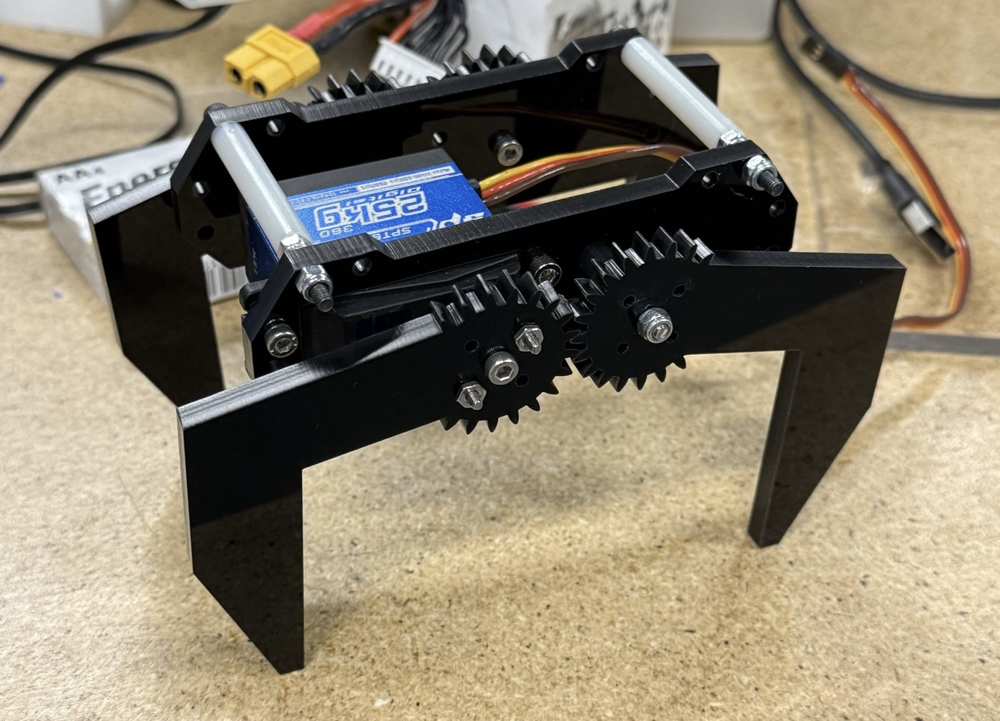
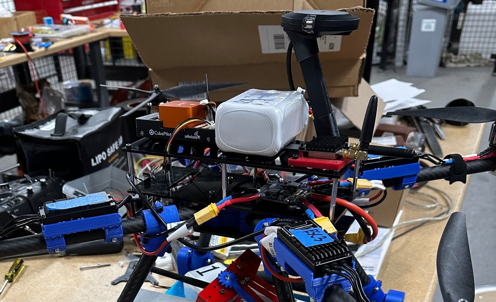
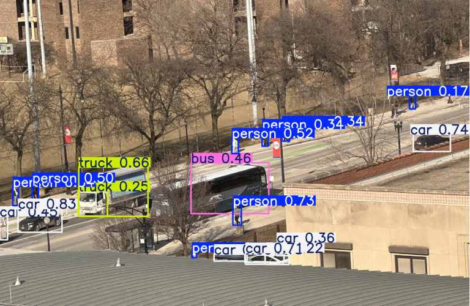
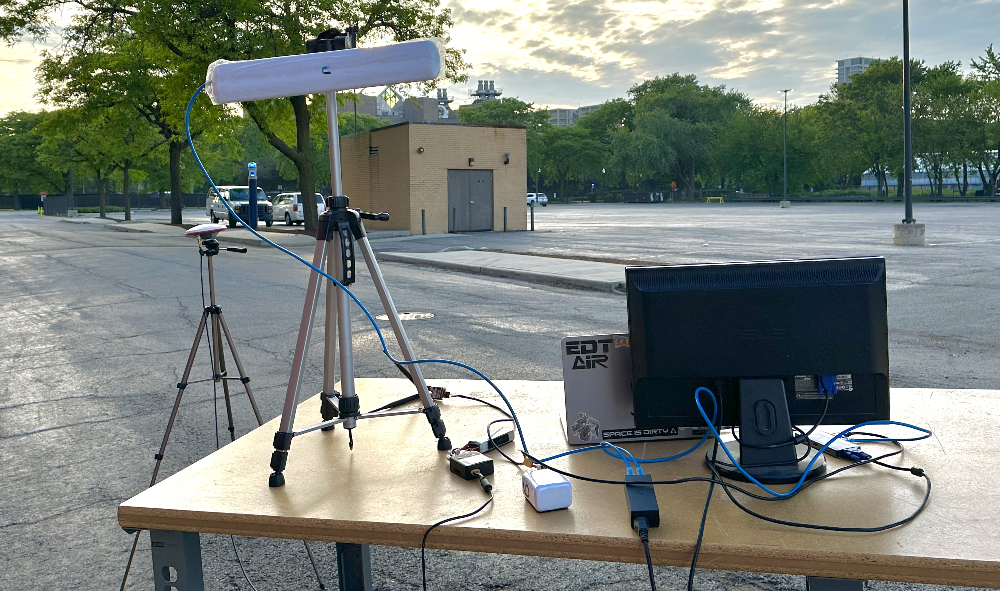

Team AIR designs and develops drones, with a focus on autonomy. The team is currently working towards the California Unmanned Aerial Systems Competition (C-UASC) competition. Every year, they use rapid prototyping techniques to create modular frames for various mission requirements. With a commitment to continuous improvement, the team consistently works on advancing software capabilities to enhance autonomous functions.
Each subteam consists of members from many different majors who work together to streamline the implementation of various systems into the final product.
The Airframe Subteam is responsible for designing and constructing a custom-built aircraft engineered for durability, stability, and efficiency. Utilizing rapid prototyping manufacturing techniques, the team ensures scalability while ensuring efficiency and flight performance. Their work involves developing the drone's frame and mounting hardware using SolidWorks and simulation with Ansys, applying principles of statics and dynamics to achieve a structurally sound and efficient design. Parts are produced through in-house 3D printing, laser cutting, waterjet cutting, and milling.
Read more→The Airdrop Subteam is responsible for designing and building a reliable and accurate payload pickup and delivery system to support mission operations. The team manages every stage of the process, including containment, deployment, and controlled descent, to achieve precise and safe landings on target. Their work involves the design, fabrication, and integration of the full payload system, including mechatronics for deployment. Through careful engineering and rigorous testing, they enable payloads to be picked up and released with precision and safety of people around.
Read more→

The Avionics Subteam serves as the backbone of the drone's electrical and control infrastructure, enabling seamless integration of all onboard systems. The team is responsible for designing and implementing the drone's entire power distribution, including batteries and custom designed circuits for power conversion and battery management. They integrate flight critical components such as flight controllers, telemetry radios, GPS/RTK modules, and motors as well as ground operating station equipment. When off-the-shelf solutions are insufficient, the subteam develops custom hardware to meet mission requirements, ensuring reliable and efficient operation throughout flight.
Read more→The Vision and Intelligence Subteam develops software that enables the aircraft to sense and interpret its environment with precision. This involves detecting ground targets for payload drops and geotagging, and algorithms to aid in autonomous navigation. The team focuses on real-time object detection using OpenCV and YOLOv11, producing data essential for autonomous navigation. Their work centers on writing and testing computer vision algorithms, training object detection models, and processing imagery for navigation, ground mapping, and mission-critical decision-making in coordination with the Guidance, Navigation & Control Subteam.


The Guidance, Navigation, and Control (GNC) Subteam enables fully autonomous flight, ensuring the aircraft can plan and execute missions with precision and reliability. The team develops algorithms for waypoint navigation, dynamic path planning, and real-time flight control, tackling challenges such as efficient flight planning and navigating to targets. They leverage processed data from the Vision Subteam—such as detected targets and 3D terrain maps—to enhance autonomous navigation and situational awareness. Mission execution is powered by the ArduPilot flight controller and configured through QGroundControl and Ardupilot Mission Planner as well as a custom web interface. To validate these algorithms, the team conducts extensive software-in-the-loop (SITL) simulations, ensuring robust and reliable autonomous flight.